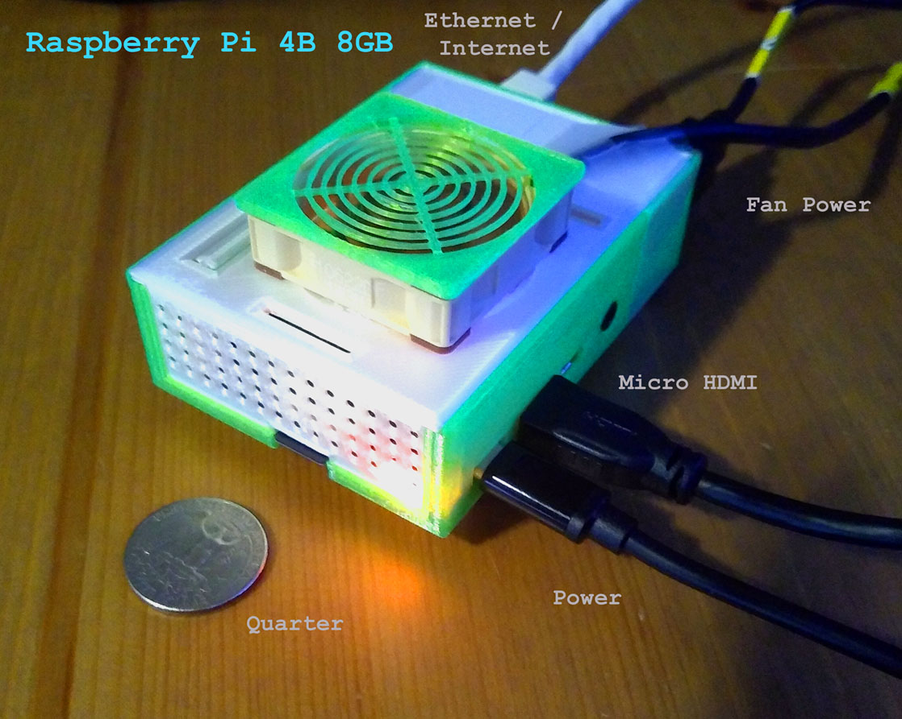

This web page is served by a small SBC (Single Board Computer) out of my home over a cable internet provider. It is a fast capable "VR Metaverse Server" locally from my LAN at network speeds, and more slowly across the global internet. That's not to say it's a slow internet server, just that it is speedy on the local network serving up large files that are normal in the x-y-z axis 3D world of VR.
It utilizes A-frame WebXR NAF, and can be accessed with a browser inside a VR headset such as the Oculus Quest 2 or other headsets. It can also do VR Chat for fully immersive VR social experiences. Avatars are only anonymous at this time (so please behave courteously to others who will appear as yellow robot heads).
Test VR in your headset with the links below (select the VR button in lower right of browser screen to enter the immersive experience). Detailed article on how to set this up are below. You can find out more by following me on Medium and Twitter. Also, checkout my internet hosted VR server at Funbit64.com and VR Blog at Rocket Virtual.
Please Note: the test links proceeded with "Test on LAN" are to be tested with your VR headset locally on your home network through wi-fi. Because of the many large 3D graphic files being transferred for VR and the upload speed of your cable/internet provider (which may be throttle or limited -test with DSL speed test), experiences over the internet by others outside your LAN may have long delays in loading a VR enabled page. This may exceed their patience level, or they may believe the page is broken (when it is not). These are not limitations of the Raspberry Pi, but rather limitations of the network upon which the Pi resides. However, if they (the visitor) have loaded the page previously, and the files reside within their browser's cache, load times will be significantly reduced, and the experience may be much more tolerable and enjoyable.
Good to test over the internet as well . . .Advanced Hello World -move around with controller toggle stick, select with the trigger on controller. (multi-player VR Talk enabled). Cycling VR environment.
Test on LAN:Virtual Reality Office Demo (multi-player VR Talk enabled) -customize to your liking
Test on LAN:Treasure Island VR Demo (multi-player VR Talk enabled) -an private island meeting place with sunken treasure and fish
Test on LAN mostly:Mind Palace 360 Immersive VR Demo (multi-player VR Talk enabled) -different rooms, 360 teleportation, customize by changing to your photos. Very slow load over Internet, could take up to 2 mins because of 12 heavy 360 photos. You can also reduce that number number by modifying HTML. Good demonstration of upload speed latency. Cached browser files will be a significantly much quicker load on second attempt. Background task loading is something I haven't tried yet. Could possibly solve problem and make the UX much better over internet access.
You can find out more about how to setup your own Raspberry Pi Metaverse Server in this article.

MOVEMENT: If you have no VR Headset, use the WASD or Arrow keys to move around, the left mouse button drag in the center of the screen rotates your view, pressing the ESC key recovers your mouse pointer.
VR headsets, desktops or laptops computers recommended for best experience because of the high speed connections and graphic processing power sometimes required for VR.
Depending on which browser you use to view the web page, the "allow controls" will appear a little different. At this time the only supported browsers are Firefox, Chrome, Edge and Oculus. Safari is not a supported browser for required WebXR at this time (fall 2021).

Click on the little lock next to the URL in the address bar in the upper top left of your browser screen to see the microphone and sound settings in the Chrome browser. Allow the microphone and sound. If you have troubles with the Chrome sound enable, some people do, you might want to try using the Firefox or Edge browsers instead.
In Chrome, to enable sound:
1. Click on the three vertical dots in the upper right corner of Chrome browser
2. Select "Settings"
3. Select "Privacy and security" on the left.
4. Find "Site Settings" in the middle of the screen.
5. Scroll down to find "Additional Content Settings".
6. Under sound expand and selection and click "Sites can play sound". That should do it.
There will need to be more than one person connected to the web page than yourself for you to see and hear another user appearing as a robot head avatar. Also microphone/speakers (recommend earphones to eliminate possible feedback) must be available on your computer to hear any speaking audio between the connected persons.
To test with yourself on the same machine, open two tabs to the same address. Please return to the previous browser tab to allow your settings for microphone and sound. Camera "must be allowed" if you have a video conference camera attached to your computer.